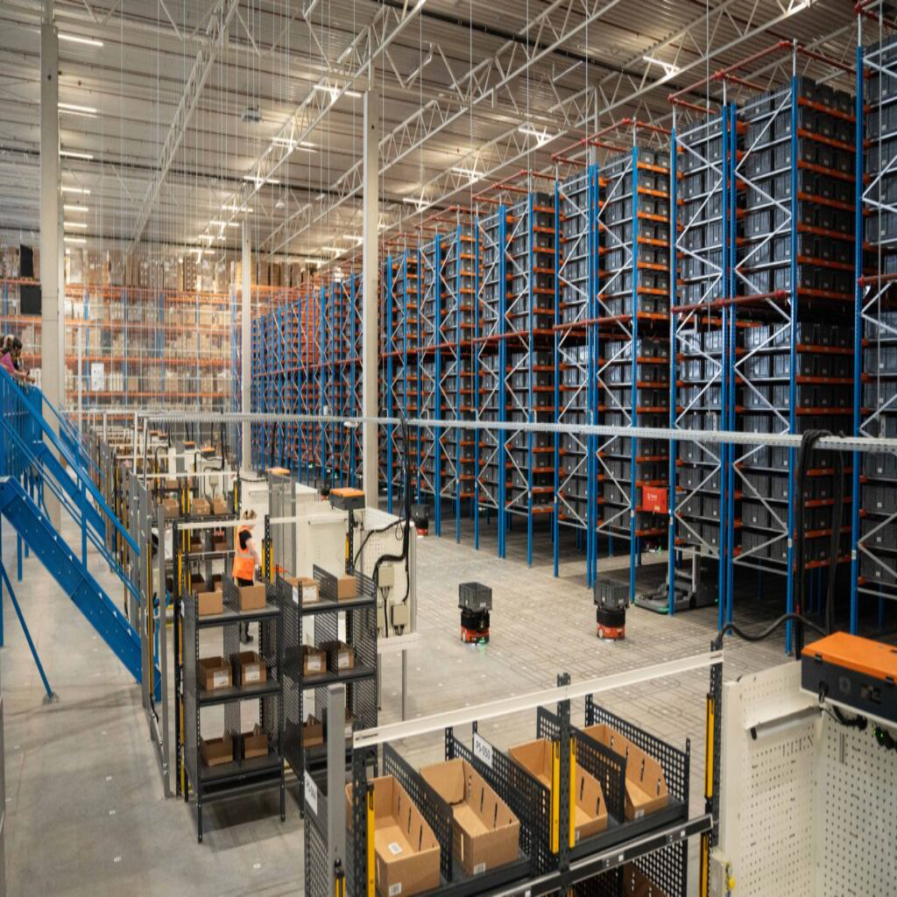

Dematic
Software Development Intern | May 2024 - Aug 2024
As a software developer at Dematic, I supported the production of the Device Controller System, which bridged the gap between autonomous mobile robots and PLC controllers. The main technologies I worked with were Java for software development/testing, MySQL to manage object definitions, linux virtual machines to access the AMR management and warehouse testing consoles, and UaExpert to read and write missions to and from PLC controllers. Working with a team of engineers, I had the opportunity to learn about the software development cycle and the importance of communication and collaboration.
